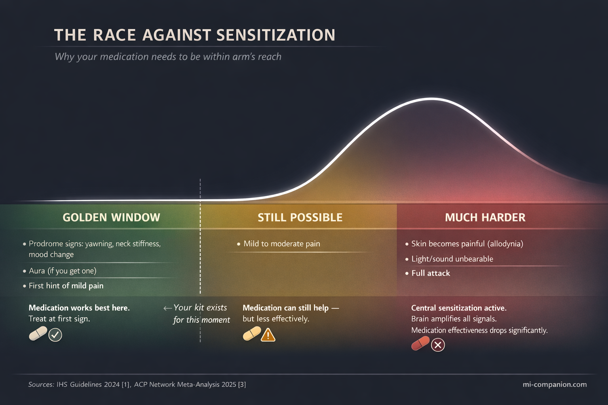
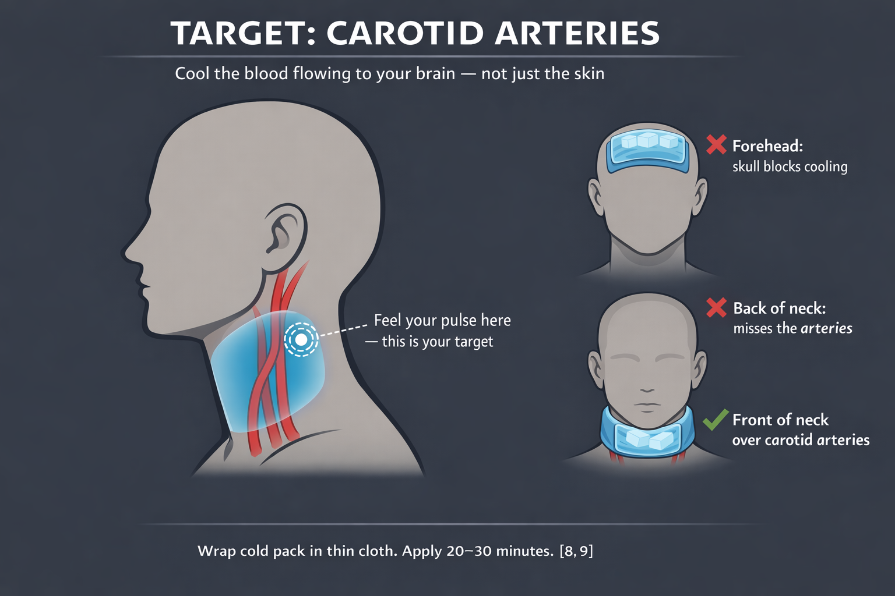
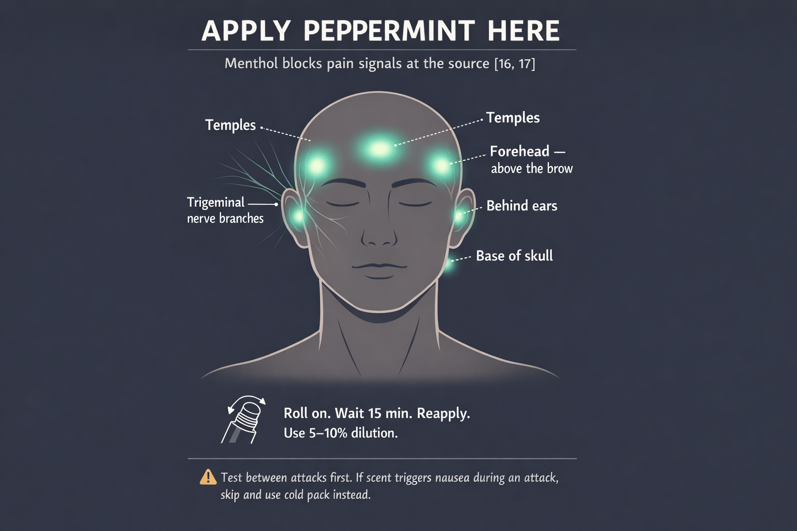
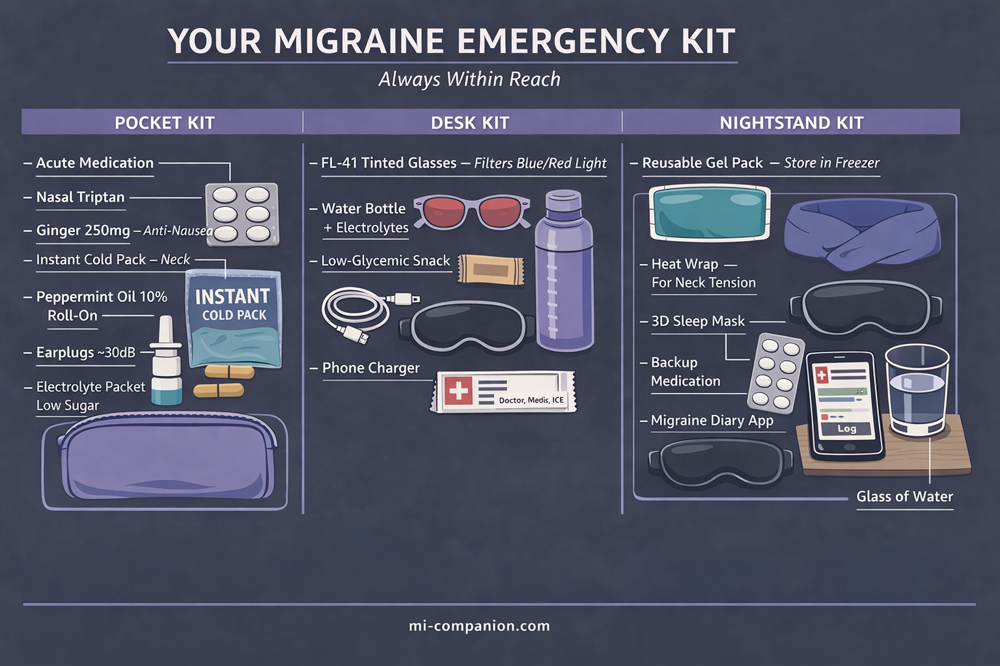

By Rustam Iuldashov
30 years lived experience with chronic migraine | Sources: 21 peer-reviewed references including Annals of Internal Medicine (network meta-analysis), Headache (systematic review, 26 RCTs), Phytotherapy Research (RCT, n=100), Journal of Clinical Nursing (meta-analysis, 4 RCTs) | Last updated: March 6, 2026
Medical Review: This content is based on peer-reviewed research from Annals of Internal Medicine, Headache, Cephalalgia, Journal of Clinical Nursing, Hawaii Journal of Medicine & Public Health, Brain, Phytotherapy Research, International Journal of Preventive Medicine, and Neurology.
Important Notice: This article is for informational purposes only and does not replace professional medical advice. The author is not a licensed physician or healthcare professional. Always consult your doctor before making medication decisions.
It was 3 p.m. on a Tuesday. I was in a meeting — fluorescent lights, stale coffee, a colleague’s perfume three chairs away. The aura hit first: a shimmering crescent in my left visual field. I had maybe 20 minutes before the pain would follow.
My medication was at home. Forty minutes away.
By the time I got there, the attack had crossed a line that no pill could pull it back from. I spent the next 14 hours in the dark, bargaining with my own skull.
That was 2009. I never let it happen again.
Key Takeaways
- Your emergency kit isn’t a shopping list. It’s an insurance policy. Each item earned its place through clinical trials and 30 years of field testing.
- Timing is the single biggest factor in treatment success — triptans and NSAIDs work dramatically better during the mild pain phase[1, 2, 3]
- Cold on the neck (carotid arteries) beats cold on the forehead — you’re cooling the blood, not the skull[8, 9]
- Peppermint oil at 10% matched 1,000 mg acetaminophen in a double-blind crossover study[16]
- Nasal sprays and auto-injectors bypass gastric stasis — the most underused upgrade in migraine care[3, 6]
- Build three kits (pocket, desk, nightstand) — one kit in one place means you’re only covered in that one place
Why Timing Decides Everything
Here’s the science behind my 3 p.m. disaster.
When a migraine begins, pain signals travel from the trigeminal nerve to the brainstem. In the early phase — while pain is still mild — your acute medication can intercept this cascade. But there’s a window. Once those signals reach the central nervous system and trigger a process called central sensitization, your skin hurts, light stabs, sound roars. The clinical term is cutaneous allodynia.[1, 2]
After that point, triptan effectiveness drops sharply.[2]
The 2024 International Headache Society guidelines state it plainly: treat during the mild pain phase.[1] The American College of Physicians confirmed it in a 2025 network meta-analysis of dozens of acute treatments.[3] Every major headache society in the world agrees on this single principle.
Treat early. Two words. One rule. Everything in your kit exists to make those two words possible — wherever you are.

The Core Kit: 7 Items That Earned Their Place
Each item below has evidence behind it. Not anecdotes. Not influencer tips. Randomized controlled trials, meta-analyses, and clinical guidelines.
And 30 years of field testing.
1. Your Acute Medication
This is not optional. This is the reason the kit exists.
Whatever your doctor prescribed — triptans, gepants, NSAIDs — it goes in first. The 2025 ACP meta-analysis identified eletriptan, rizatriptan, sumatriptan, and zolmitriptan as the most effective triptans for acute treatment.[3] The newer gepants (ubrogepant, rimegepant) work for those who can’t tolerate triptans or have cardiovascular concerns.[4]
One detail most people overlook: the OTC combination of acetaminophen 500 mg + aspirin 500 mg + caffeine 130 mg outperformed sumatriptan 50 mg in an RCT of 1,555 patients when taken early.[5] It’s available without a prescription. Ask your doctor if it makes sense for your attacks.
Now here’s the part that could change your attack entirely.
Tablets aren’t the only option — and during a migraine, they’re often not the best one. Your stomach slows down or stops during an attack. This is called gastric stasis, and it affects the majority of patients.[6] You swallow a pill, but it sits there. Doing nothing. The pain climbs.
Nasal sprays (such as zolmitriptan spray) and subcutaneous auto-injectors (such as sumatriptan injection) bypass your gut completely. They enter the bloodstream in 10–15 minutes.[3] If your attacks involve early nausea or vomiting, ask your doctor about a non-oral form. It’s the single most underused upgrade in migraine emergency care.
The rule of three locations. One dose in your bag. One at your desk. One in the car. Attacks don’t schedule themselves.
2. Anti-Nausea Backup
You take your triptan. Twenty minutes later, you vomit. The medication is gone. The attack stays.
This happens to roughly 80% of us at some point. The fix is simple: have an anti-nausea medication that works before your main drug. The 2025 AHS emergency department guidelines recommend metoclopramide — it fights nausea and speeds up absorption of other medications.[6]
Ask your doctor about ondansetron dissolving tablets. They melt on your tongue. You can’t vomit them out.
And then there’s ginger. A double-blind RCT randomized 100 patients to receive either 250 mg of ginger powder or sumatriptan 50 mg. The result: both reduced migraine severity by 44% within two hours. No significant difference. But ginger caused far fewer side effects — the only complaint was mild indigestion.[7]
Ginger capsules weigh nothing. They cost almost nothing. They don’t expire quickly. Keep them in every kit.
3. Cold Pack — But Not Where You Think
For decades, people have pressed ice to their foreheads during migraine attacks. The forehead feels intuitive. The science points somewhere else.
A randomized controlled trial tested frozen ice packs wrapped around the front of the neck, targeting the carotid arteries — the main highways delivering blood to your brain. The result was significantly better pain relief compared to placebo.[8] The mechanism: the cold actually reaches the intracranial vessels through the bloodstream. Your skull blocks direct cooling from above. Your neck doesn’t.
A 2023 meta-analysis of 4 RCTs and 2 non-RCTs confirmed cold therapy’s short-term effectiveness, with the strongest pain reduction at 30 minutes (SMD −3.21; 95% CI −5.94 to −0.48).[9]
What to pack: instant squeeze-activated cold packs. No freezer required. Crack, shake, apply. Keep two in your kit.
The technique: wrap the pack in a thin cloth. Place it on the front of your neck, just below the jaw angle — where you feel your pulse. That pulse is your carotid artery. That’s your target. Twenty to thirty minutes. You’ll feel the difference within ten.

One important caveat. Cold is the default backed by the strongest evidence. But migraine neurology is not one-size-fits-all. In roughly 20% of patients — especially those whose attacks are triggered by neck muscle tension — cold can make the spasm worse, not better.[9] If ice consistently increases your pain, you may respond better to dry heat on the neck and shoulder area: a microwavable wrap or a hot water bottle.
The way to know your type: test both between attacks. Not during one. Your calm brain makes better observations than your migraine brain.
4. FL-41 Tinted Glasses
More than 90% of people with migraine are sensitive to light. Most reach for sunglasses. That’s a mistake.
Not all light wavelengths are equal. Harvard researchers demonstrated that blue, amber, and red light intensify migraine pain — while a narrow band of green light is actually soothing.[10] Standard dark sunglasses block everything, including the green.
FL-41 tinted lenses (rose-colored) selectively filter the harmful wavelengths. In a study of children with migraine, wearing them reduced attack frequency from 6.2 per month to 1.6.[11] Newer Avulux lenses, validated in a randomized double-blind placebo-controlled trial, block up to 97% of problematic wavelengths while letting green light through.[12]
One warning: wearing dark sunglasses indoors regularly will backfire. Your eyes dark-adapt, becoming even more light-sensitive over time.[12] Tinted therapeutic lenses are the smarter choice for indoor environments.
5. Sound Protection
Phonophobia — sound sensitivity — doesn’t get the attention it deserves. During an attack, the hum of an air conditioner can feel like a jackhammer.
Foam earplugs reduce noise by approximately 30 dB. They’re cheap, disposable, and effective. Keep several pairs.
Noise-canceling earbuds work better in office settings. Some people pre-load them with low-frequency ambient sounds — brown noise, rain, or binaural beats at 10 Hz.
A practical step you can take right now: create a “migraine playlist” on your phone. Not later. Now. When your brain is misfiring and your hands are shaking, you don’t want to be scrolling through Spotify.
6. Water + Electrolytes
One in three people with migraine identify dehydration as a trigger.[13] A 2020 study of 256 women found a significant negative correlation between water intake and migraine severity, frequency, and duration.[14]
But here’s the part most guides get wrong: gulping plain water isn’t enough. Your brain depends on a balance between water and electrolytes — sodium, potassium, magnesium. Drink too much plain water without replacing those minerals, and you risk diluting your blood sodium. The result: worse headaches, not better.[15]
What to pack: a refillable water bottle and 2–3 low-sugar electrolyte packets. The sugar matters — excess glucose can trigger attacks in some people.
How to drink: small sips throughout the day. Not half a liter when the pain starts. Steady hydration is prevention. Catching up is damage control.
7. Peppermint Oil Roll-On
This is the item that surprises people. It shouldn’t.
A randomized, placebo-controlled, double-blind crossover study tracked 41 patients across 164 headache episodes. Topical 10% peppermint oil in ethanol applied to the forehead and temples produced significant pain reduction within 15 minutes. The result was statistically comparable to 1,000 mg of acetaminophen.[16]
A separate double-blind RCT (n=120) found that intranasal peppermint oil at 1.5% concentration reduced migraine intensity at rates similar to lidocaine.[17]
The active compound, menthol, activates cold-sensitive TRPM8 receptors on your skin, triggering an analgesic response without actual cold.[16] It’s a chemical ice pack.
How to use: roll on temples, forehead, and the back of your neck. These areas correspond to the branches of the trigeminal nerve — the same nerve that drives migraine pain.[1] You’re applying the oil exactly where the pain signal originates. Reapply every 15–30 minutes. In a 5–10% dilution, it’s safe for repeated use.

But test it first. During the hyperosmia phase of a migraine — when every smell becomes amplified — even peppermint can trigger nausea in some people. Try the oil between attacks to learn your reaction. If the smell bothers you during an attack, skip it and rely on your cold pack instead. No single tool works for everyone. That’s not a weakness of the kit — it’s the nature of migraine.
The Extended Kit
| Item | Why |
|---|---|
| Protein bar or nuts | Blood sugar drops trigger attacks. Keep something low-glycemic that doesn’t need refrigeration. |
| Contoured sleep mask | 3D design that doesn’t touch your eyelids. Instant darkness anywhere. |
| Phone charger | A dead phone during an attack — when you need a ride, a call, a distraction — is its own emergency. |
| Emergency contact card | When speech is difficult, a card with your doctor’s name, your medication list, and your emergency contact does the talking. |
| Migraine diary (or app) | Log time, trigger, severity, what helped. You won’t remember later. Your future self needs this data. |
| Neuromodulation device | FDA-cleared portable devices (e-TNS, nVNS) offer drug-free acute relief. Especially valuable if you’ve hit your monthly triptan limit. Prescription — discuss with your doctor.[20, 21] |
Three Kits, Three Locations
One kit in one place means you’re covered only when you’re near that one place. Build three.
The Pocket Kit (always on you): medication + anti-nausea + cold pack + peppermint roll-on + earplugs + one electrolyte packet. All of this fits in a pouch the size of your hand.
The Desk Kit (office/studio): everything above + water bottle + FL-41 glasses + protein bar + sleep mask + charger.
The Nightstand Kit (home): medication + reusable gel packs in the freezer + heating pad for neck tension + blackout curtains or sleep mask + whatever comfort items make the dark feel less lonely.

When the Attack Starts: Your 6-Step Protocol
Print this. Tape it inside your kit. Memorize it before you need it — because during an attack, thinking clearly is the first thing you lose.
Step 0 — Remove the trigger.
This step comes before everything else. If the attack was triggered by a smell, a flickering light, a stuffy room — leave. Hallway, bathroom, outside, anywhere. Taking medication while the trigger is still firing is like bailing water without plugging the hole. Remove yourself first. Then treat.
Step 1 — Medicate.
At the first warning sign. Aura, neck stiffness, excessive yawning, mood shift — whatever your personal signal is. Do not wait to confirm it’s “really” a migraine. If tablets won’t stay down, use your nasal spray or auto-injector.[1, 2, 3]
Step 2 — Cold on the neck.
Activate a cold pack. Wrap it. Place it on the front of your neck, just below the jaw angle, where you feel your pulse — over the carotid arteries.[8, 9] If cold worsens your pain, switch to dry heat on the neck and shoulders.
Step 3 — Block the world.
Glasses on. Earplugs in. Lights down or off. Cut every input your brain doesn’t need.
Step 4 — Hydrate.
Small sips. Water with electrolytes. Even if you’re nauseous — tiny sips are better than nothing.
Step 5 — Peppermint.
Temples. Forehead. Back of neck. Reapply every 15 minutes.[16] Skip if strong scents worsen your nausea — use cold therapy instead.
If nausea is severe: take your anti-nausea medication first. Wait 15–20 minutes. Then take your migraine drug.[6]
⚠️ When to Seek Emergency Help
A migraine attack that lasts longer than 72 hours without meaningful relief — even with medication — is called status migrainosus. It is a medical emergency.[19]
Go to the emergency department if:
• Your attack has continued beyond 72 hours without responding to your usual treatment
• You experience a sudden “thunderclap” headache — the worst headache of your life, reaching peak intensity within seconds
• You develop new neurological symptoms you have never had before: sudden weakness on one side, loss of speech, confusion, vision loss, or seizures
• You have a fever combined with a severe headache and stiff neck
If you are experiencing any of these symptoms, call your local emergency number immediately. Do not use this article to self-diagnose.
Check Your Kit Every Month
Medications expire. Cold packs lose their chemical charge. Electrolyte packets get crushed under your laptop. Peppermint oil oxidizes.
Set a recurring reminder. First of every month. Five minutes. Open each kit, inspect, restock.
The Real Point
After 30 years with migraine, I’ve learned something that no clinical trial will ever measure.
The kit doesn’t just reduce pain. It reduces fear. The fear of being caught unprepared. The fear of canceling on someone you love. The fear of sitting in a meeting, smelling that perfume, and knowing — with cold certainty — that your medication is 40 minutes away.
You can’t control when an attack comes. You can control what’s in your bag when it does.
Pack your kit tonight.
⚕️ Important Medical Disclaimer
This article is for informational and educational purposes only and does not constitute medical advice, diagnosis, or treatment. The author, Rustam Iuldashov, is not a licensed physician, neurologist, or healthcare professional. He is a patient advocate with 30 years of personal experience living with chronic migraine.
All clinical claims in this article are sourced from peer-reviewed research published in indexed medical journals. Study designs and sample sizes are noted where applicable.
Always consult a qualified healthcare provider for questions about your individual health, migraine treatment, or medication decisions.
This content was last reviewed for accuracy on March 6, 2026.
References
- Puledda F, Sacco S, Diener HC, et al. “International Headache Society global practice recommendations for the acute pharmacological treatment of migraine.” Cephalalgia, 44(8):3331024241252666 (2024). doi:10.1177/03331024241252666. Study design: Clinical practice guideline (IHS). n=N/A.
- Valade D. “Early treatment of acute migraine: new evidence of benefits.” Cephalalgia, 29(Suppl 3):15-21 (2009). doi:10.1177/03331024090290S304. Study design: Review (AEGIS, AIMS, AwM studies). n=multiple RCTs pooled.
- Qaseem A, Tice JA, Etxeandia-Ikobaltzeta I, et al. “Pharmacologic treatments of acute episodic migraine headache in outpatient settings: a clinical guideline from the American College of Physicians.” Ann Intern Med, 178:571-578 (2025). doi:10.7326/ANNALS-24-03095. Study design: Network meta-analysis. n=multiple RCTs.
- AHS Position Statement 2024. “CGRP inhibitors elevated to first-line status for migraine prevention.” Headache (2024). Study design: Consensus position statement. n=N/A.
- Goldstein J, Silberstein SD, Saper JR, et al. “Acetaminophen, aspirin, and caffeine versus sumatriptan succinate in the early treatment of migraine: results from the ASSET trial.” Headache, 45(8):973-982 (2005). doi:10.1111/j.1526-4610.2005.05177.x. Study design: RCT. n=1,555.
- Robblee J, Minen MT, Friedman BW, et al. “2025 guideline update to acute treatment of migraine for adults in the emergency department: The AHS evidence assessment of parenteral pharmacotherapies.” Headache (2025). doi:10.1111/head.70016. Study design: Systematic review + meta-analysis. n=26 RCTs (12 Class I).
- Maghbooli M, Golipour F, Esfandabadi AM, Yousefi M. “Comparison between the efficacy of ginger and sumatriptan in the ablative treatment of the common migraine.” Phytother Res, 28(3):412-415 (2014). doi:10.1002/ptr.4996. Study design: Double-blind RCT. n=100.
- Sprouse-Blum AS, Gabriel AK, Brown JP, Yee MH. “Randomized controlled trial: targeted neck cooling in the treatment of the migraine patient.” Hawaii J Med Public Health, 72(7):237-241 (2013). Study design: RCT. n=55.
- Hsu YY, Chen CJ, Wu SH, Chen KH. “Cold intervention for relieving migraine symptoms: a systematic review and meta-analysis.” J Clin Nurs, 32(11-12):2455-2465 (2023). doi:10.1111/jocn.16368. Study design: Systematic review + meta-analysis. n=6 studies (4 RCTs + 2 non-RCTs).
- Noseda R, Bernstein CA, Nir RR, et al. “Migraine photophobia originating in cone-driven retinal pathways.” Brain, 139(Pt 7):1971-1986 (2016). doi:10.1093/brain/aww119. Study design: Experimental (human subjects). n=69.
- Good PA, Taylor RH, Mortimer MJ. “The use of tinted glasses in childhood migraine.” Headache, 31(8):533-536 (1991). Study design: RCT. n=20. Migraine frequency: 6.2 → 1.6/month.
- Hoggan RN, Subhash A, Blair S, et al. “Thin-film optical notch filter spectacle coatings for the treatment of migraine and photophobia.” J Clin Neurosci, 28:71-76 (2016). doi:10.1016/j.jocn.2015.09.024. Study design: Randomized, double-masked crossover. n=12.
- American Migraine Foundation. “Dehydration and Migraine.” americanmigrainefoundation.org. Study design: Expert consensus / patient survey data. n=N/A.
- Khorsha F, Mirzababaei A, Togha M, Mirzaei K. “Association of drinking water and migraine headache severity.” J Clin Neurosci, 77:81-84 (2020). doi:10.1016/j.jocn.2020.05.034. Study design: Cross-sectional. n=256.
- Delgado-López PD, Fernández-de-las-Peñas C, Palacios-Ceña M. “Sodium in migraine: new insights into an old story.” Cephalalgia, 41(6):759-768 (2021). doi:10.1177/0333102421997280. Study design: Narrative review. n=N/A.
- Göbel H, Fresenius J, Heinze A, et al. “Effectiveness of oleum menthae piperitae and paracetamol in therapy of headache of the tension type.” Nervenarzt, 67(8):672-681 (1996). Study design: Randomized, double-blind, placebo-controlled crossover. n=41 (164 attacks).
- Rafieian-Kopaei M, Hasanpour-Dehkordi A, Lorigooini Z, et al. “Comparing the effect of intranasal lidocaine 4% with peppermint essential oil drop 1.5% on migraine attacks: a double-blind clinical trial.” Int J Prev Med, 10:121 (2019). doi:10.4103/ijpvm.IJPVM_221_17. Study design: Double-blind RCT. n=120.
- Murtey P, Mohd Noor N, Ishak A, Idris NS. “Essential oils as an alternative treatment for migraine headache: a systematic review and meta-analysis.” Korean J Fam Med, 45(1):18-26 (2024). doi:10.4082/kjfm.23.0106. Study design: Systematic review + meta-analysis. n=558 (7 RCTs).
- Puledda F, Sacco S, Diener HC, et al. “IHS global practice recommendations for preventive pharmacological treatment of migraine.” Cephalalgia (2024). doi:10.1177/03331024241269735. Study design: Clinical practice guideline (IHS). n=N/A.
- Schoenen J, Vandersmissen B, Gardella S, et al. “Migraine prevention with a supraorbital transcutaneous stimulator: a randomized controlled trial.” Neurology, 80(8):697-704 (2013). doi:10.1212/WNL.0b013e3182825055. Study design: RCT (sham-controlled). n=67.
- Silberstein SD, Calhoun AH, Lipton RB, et al. “Chronic migraine headache prevention with noninvasive vagus nerve stimulation: the EVENT study.” Neurology, 87(5):529-538 (2016). doi:10.1212/WNL.0000000000002918. Study design: Double-blind, sham-controlled RCT. n=59.

How We Create Content
- Peer-reviewed sources only. Annals of Internal Medicine, Headache, Cephalalgia, Journal of Clinical Nursing, Brain, Phytotherapy Research, International Journal of Preventive Medicine, Neurology, Korean Journal of Family Medicine.
- Study transparency. Study design and sample sizes noted for all clinical references.
- Source verification. All claims backed by numbered references with DOI links.
- Experience + Science. 30 years personal migraine experience combined with peer-reviewed evidence.
- Regular updates. Articles reviewed when significant new research emerges.
- No conflicts of interest. No funding from pharma, device manufacturers, or supplement companies.
Build Your Kit. Track Your Attacks.
Migraine Companion helps you log attacks, track triggers, and build the personal dataset that turns unpredictable pain into actionable patterns.
Last reviewed: March 2026
Next scheduled review: September 2026